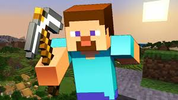
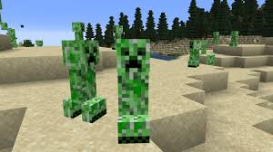
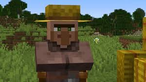

Es un videojuego de mundo abierto que permite a los jugadores explorar, construir y sobrevivir en un mundo generado aleatoriamente compuesto por bloques tridimensionales. Los jugadores pueden recolectar recursos, crear herramientas y construir estructuras de todo tipo, desde simples casas hasta complejas ciudades.
| Steve |  | Es el personaje principal y jugable en el mundo de Minecraft.Generalmente se representa como un humano con camiseta azul y pantalones azules. Los jugadores controlan a Steve mientras exploran. |
| Creeper |  | Los creepers son criaturas icónicas y hostiles en el mundo de "Minecraft". Se caracterizan por su apariencia verde y su habilidad para explotar cuando están cerca de los jugadores, causando daño y destrucción. |
| Aldeano |  | Los aldeanos son personajes no jugables que se encuentran en aldeas generadas aleatoriamente en el mundo de "Minecraft". Estos personajes tienen una apariencia humana simplificada y realizan diversas actividades dentro de la aldea, como trabajar en campos, criar animales o comerciar con los jugadores. |